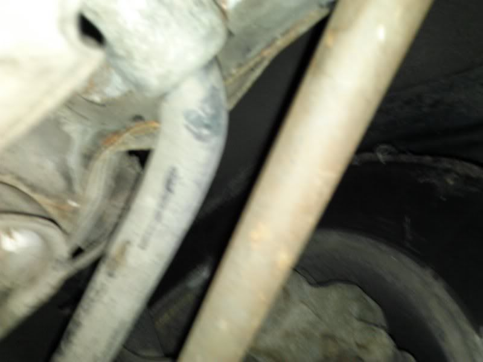

-
I posted in a thread about this already, but had no responses. I need to get some opinions about this soon, because my little brother is considering buying this car, and we need to get back to the owner. The car in question is a fairly clean '86 slicktop. The guy wants $600 for it, which is a good deal! Only trouble is, the driver side frame is a little squished… It runs and drives according to the owner, but pulls pretty hard, which is no surprise. Here is the ad:
http://boulder.craigslist.org/cto/3803505319.html
Here is the damage:

Sorry for the crappy pics, it was my phone. The car comes with brand new Tokico springs and shocks. It also needs brake work, as the pedal doesn't hold pressure, the dash is destroyed, and the power steering is a little chunky. Other than that, the interior isn't bad, and the motor runs like it is brand new. Smooth as silk.
We were thinking we would need to find a donor car and cut out the damaged section of the frame and then weld it in to replace it. Do you think it would be worth it? What else could have been damaged? I'm guessing the frame, subframe, tension rods, and control arms could be tweaked. I dunno if it would be worth it, but my little brother really wants it. I'm not sure he understands how much work this would be."Understeer is when you hit the wall with the front of the car. Oversteer is when you hit the wall with the rear of the car. Horsepower is how fast you hit the wall. Torque is how far you take the wall with you…"
-'68 Datsun 1600 Roadster
Build Thread: http://community.ratsun.net/topic/21…-build-thread/
-'85 300zx Turbo
Build Thread: http://z31performance.com/showthread…)build-thread! -
Buy it. Boost it. Weld diff. Beat the fuck out of it sliding, then forget about it when you crash it. :P- VG30DET (HE341) 86 300ZX - 1982 280ZX Turbo - Headered NA 1986 300ZX 2+2 - 2000 Xterra - -
Bent frame…this is the donor car. Buy this then find a clean shell, transfer shit over.Tomakze;332703 wrote: We were thinking we would need to find a donor car and cut out the damaged section of the frame and then weld it in to replace it.
After you get sucked in by the $600 price tag, fixing that frame is going to run you up and might never be quite right.Cha iro
enjoy building it yourself.
if it fails, fuck it.
at least you gave it a whirl. -
Hard to tell from the pics, but I'm assuming the tension rod is bent/pushed back and causing your pull. You may be able to get it driveable with an adjustable/shorter rod.
At worst, part it out and make the money back.5.3 LSx Z31 -
^What he said^ I would also offer little less money when you get ready to buy it.... -
Good options posted. From experience having a car I really wanted to keep with a bent frame. All the work i did/had done and it was still NEVER right. You could get it driveable maybe to play with and then use it as a donor -
A lot of high end shops invested in frame jigs to straighten cars, and they never use them, not because it's expensive to use, it's really not more complicated than a hoist with a bunch of floorjacks and chains attached to it.... the real issue is very few people ever really used them to become skilled at frame repairs, and no one wants the liability of not having adequately fixed the chassis for the owner
Which is sad because I saw one of these frame straigheners being used to hoist up long term bodywork/welding jobs only -
Ask FlyingT how much his chop-cut cost him -
I'll talk to my brother. After playing with my Z he really wants one. I suppose we could buy it, fix it up enough to drive (Just hack in a new section and get it kinda close) and then when he has the dough, find a straight body to swap everything over. Too bad to see this happen to the slicktop. That was why we wanted it. It's an '86 slicktop with black interior! That's a triple win! Ultimate Z31 in some ways. Would make a very cool project. I just wish the frame wasn't bent. "Understeer is when you hit the wall with the front of the car. Oversteer is when you hit the wall with the rear of the car. Horsepower is how fast you hit the wall. Torque is how far you take the wall with you…"
"Understeer is when you hit the wall with the front of the car. Oversteer is when you hit the wall with the rear of the car. Horsepower is how fast you hit the wall. Torque is how far you take the wall with you…"
-'68 Datsun 1600 Roadster
Build Thread: http://community.ratsun.net/topic/21…-build-thread/
-'85 300zx Turbo
Build Thread: http://z31performance.com/showthread…)build-thread! -
thats what i did, it can worki r teh noobz;332743 wrote: You may be able to get it driveable with an adjustable/shorter rod.

-
Looks like we're buying it. My brother came back and told the guy it would probably be too much trouble to fix. The guy has had offers of more than $600, but since it was his baby, he doesn't want to see it scrapped. (Neither do I) He has determined we were the best bet to get it going. (I showed up in my Z and a z31 t-shirt, so I think he knows we love these cars, lol) Anyway, he offered to sell it to my brother for $400-$450 so it has a chance of being resurrected. I told my brother he'd be totally crazy to refuse, so it looks like he's gonna bite! With any luck, in a few days, you will all be welcoming a new member to the z31 community! Hopefully he won't drown you all in too many questions, (like me) lol!
Whoot! This will be funny… two brothers, both with Zs purchased for under $500. I'm not sure who got the better deal… (or worse?) lol."Understeer is when you hit the wall with the front of the car. Oversteer is when you hit the wall with the rear of the car. Horsepower is how fast you hit the wall. Torque is how far you take the wall with you…"
-'68 Datsun 1600 Roadster
Build Thread: http://community.ratsun.net/topic/21…-build-thread/
-'85 300zx Turbo
Build Thread: http://z31performance.com/showthread…)build-thread! -
Take it to a auto shop and get a quote on some frame time. Use to do it when i worked at a body shop. Really not hard just alot of measuring. Pretty cool watching the puller just bring things back to square. Little rose bud and hammering also helps those hard spots.07 Nissan Frontier 4.0 NISMO--SOLD
84 Ranger 4x4 2.8 v6
84 AE---Future Beast IN THE WORKS http://z31performance.com/showthread…lmost-stock-ae :-)
74 260zT project vg30et---SOLD
2013 Dodge Ram 1500 HEMI Big Horn (DD)
2000 Suzuki SV650S

-
Being someone that's dealing with a Z that had been hit prior, I would avoid it all costs, and mine doesn't even have a bent frame, just body mounting stuff ahead of the drivers strut tower. It's been a giant pain to get any of the body parts to fit right. At this point I'm trying to find a shell with a straight body to transfer all the mechanical parts to.Prius… because Pretentious wouldn't fit across the back of the car…
Cheap, Fast, Reliable - pick any two
My 1986 Turbo Build -
Not trying to discourage but I had a car that when I looked at it from a certain angle I used to get pissed off. And for some reason the pass side wheel looked slighty off in the wheel well. I was so excited when I first saw it my emotion made me fuck up and get it for the astounding some of $300.Cha iro
enjoy building it yourself.
if it fails, fuck it.
at least you gave it a whirl.

Copyright © 2006–. All rights reserved. Privacy Policy